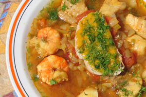

Bouillabaisse
Ingrediënten (voor 4 - 6 personen)
- 2 blikken gepelde tomaten á 400 gram
- 1 l visbouillon of water
- mespunt saffraan
- zeezout
- versgemalen zwarte peper
- 2 kg gemengde vis, geschubd en schoongemaakt (bijvoorbeeld kreeft, krab, heek, zeeduivel, rode mul, braam of zonnevis)
Voor de soepbasis
- 1 venkelknol
- 1 struik bleekselderij, schoongemaakt
- 1 teen knoflook, gepeld
- 2 grote uien, gepeld
- 2 grote wortelen, geschild
- handje peterselie, grof gehakt
- 2 tl venkelzaad
- 2 laurierblaadjes
- een stuk dun gesneden sinaasappelschil
- olijfolie extra vergine
Voor de rouille
- 1/2 teentje knoflook, gepeld
- zeezout
- 1 grote eidooier
- 2 tl dijonmosterd
- 300 ml extra vierge olijfolie
- 300 ml olijfolie
- versgemalen zwarte peper
- citroensap naar smaak
- mespunt saffraan
- 2 tl cayennepeper
Voor de croutons
- 1 baguette of ciabattabrood
- boter
Bereiding
- Hak de groenten voor de soepbasis grof en smoor ze in een grote pan in olijfolie met de peterselie,
het venkelzaad en de laurierblaadjes, afgedekt met een deksel in ongeveer 40 minuten heel zacht. - Verwijder het deksel, zet het vuur hoger en laat alles licht kleuren. Blijf roeren om te voorkomen dat de groenten aanbakken.
- Doe de tomaten erbij met de bouillon, de fijngesneden sinaasappelschil, zout en peper naar smaak en breng alles aan de kook.
- Zet het vuur lager en laat alles op zeer laag vuur 1 uur trekken.
- Maak intussen de croutons. Snijd de baguette in sneetjes van een halve cm dik, beboter beide kanten
en leg het brood op een bakplaat. Bak het ongeveer 15 minuten in de oven op 180 ° Celcius, of tot het knapperig en goudbruin is. - Bestrooi de vis met zout en peper en leg de stukken in de soep, let erop dat ze allemaal onder
liggen. Het moet niet te dik worden, dus schenk er eventueel nog wat kokend water of bouillon op. - Verwarm de soep nu ongeveer 10 minuten op laag vuur of tot de vis gaar is.
- Voeg op het einde de saffraan toe. Je kunt deze eventueel vervangen door curcuma.
- Serveer de bouillbaisse in een diep bord. Leg eerst een crouton, rijkelijk bestreken met rouille in het bord en giet vervolgens de soep erover.
Rouille
- Pureer in een vijzel met stamper de knoflook met 2 theelepels zout.
- Klop met een garde de eidooier en de mosterd in een kom door elkaar en klop er dan beetje bij beetje de olijfolie bij.
- Nadat je een kwart van de olie erdoor geklopt hebt, kun je de rest in grotere hoeveelheden toevoegen.
- Wanneer alle olie is gebruikt, klop je de knoflook en het citroensap erdoor.
- Voeg daar een mespunt saffraan en een flinke theelepel cayennepeper aan toe.
- Breng de saus eventueel verder op smaak met zout en peper. Hij moet knalgeel zijn, met een lekkere, pittige knoflookachtige, saffraanachtige smaak.